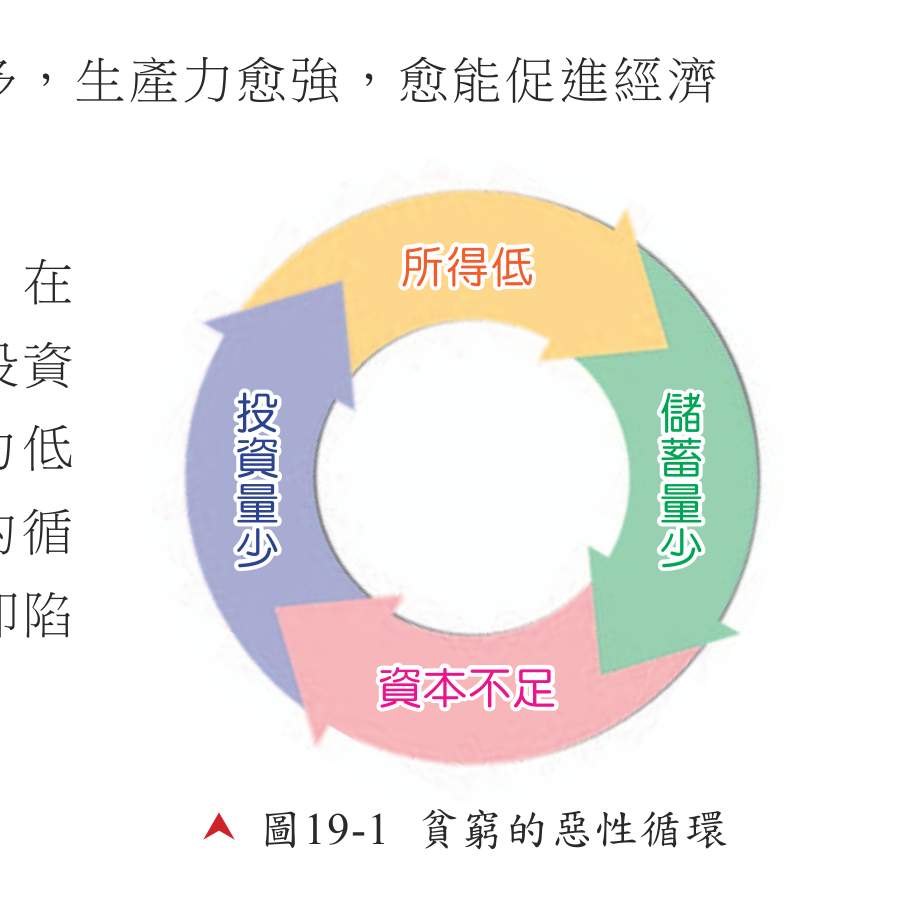
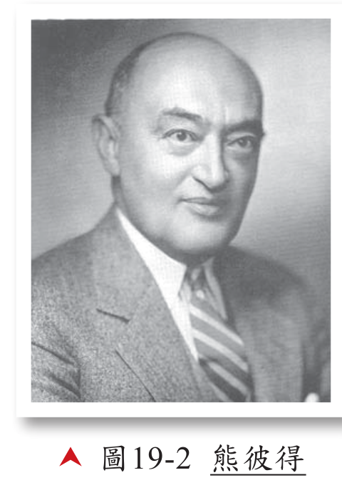
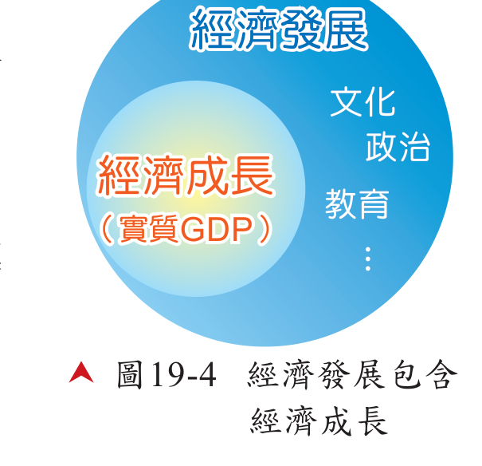
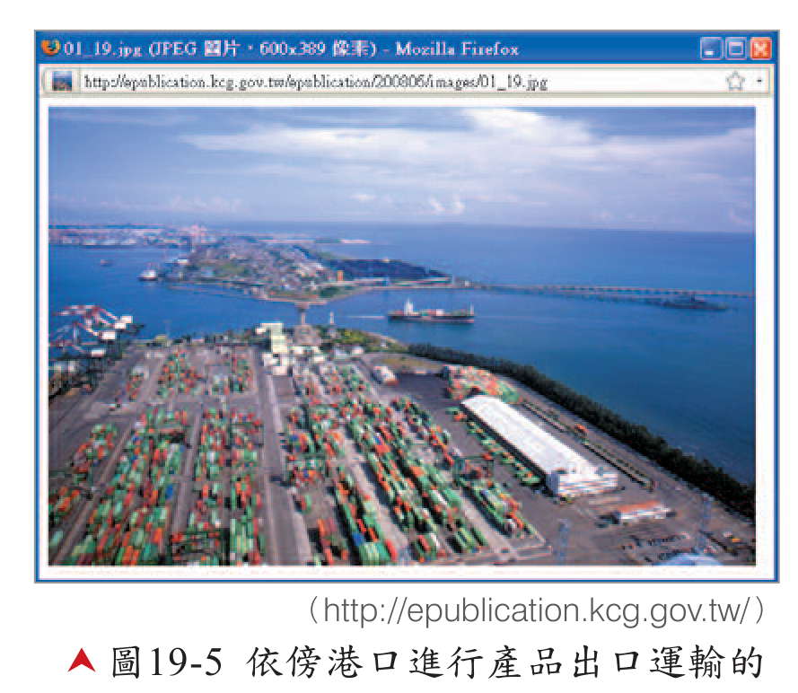
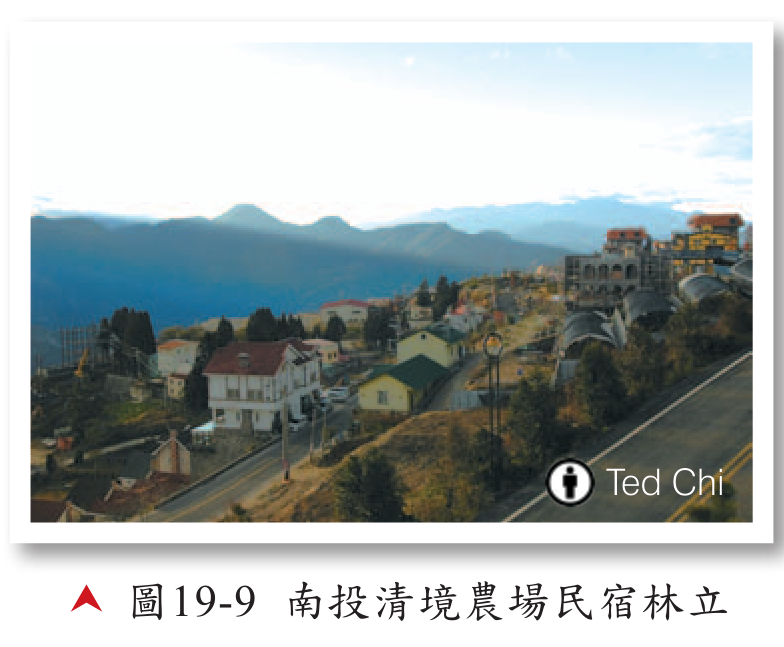

① 19-1 經濟成長意義、決定因素與測定
台灣人民在 1950 年代騎腳踏車、1970 年代騎機車、1990 年代開汽車、到 21 世紀搭高鐵，生活水準顯著躍升。1976 年以前我國平均每人 GDP 不到 1,000 美元，現今已超越 34,000 美元，這正是經濟成長（Economic Growth）所帶來的實質成果。
📌 經濟成長的定義與適用對象：
• 核心定義：指一國「實質總產出（實質 GDP）」或「平均每人實質 GDP」不斷增加的現象。
• 適用對象：較適用於描述「已開發國家」的經濟進步情況。因已開發國家之制度、法律、市場架構已臻完善，故政策核心著重於追求實質 GDP 的持續增加。
• 核心定義：指一國「實質總產出（實質 GDP）」或「平均每人實質 GDP」不斷增加的現象。
• 適用對象：較適用於描述「已開發國家」的經濟進步情況。因已開發國家之制度、法律、市場架構已臻完善，故政策核心著重於追求實質 GDP 的持續增加。
一、決定經濟成長的五大核心要素
- 自然資源的多寡：豐富土地與天然資源（如科威特石油、澳洲礦產）奠定初期發展優勢。
- 技術的進步與創新：生產技術進步與企業家創新，促使生產可能曲線（PPC）向外擴張，帶動總產出躍升。
- 政府的施政效能：提供完善的基礎建設（交通、電力、水資源）、建立健全金融制度與保護智慧財產權。
- 人力資本（Human Capital）的提升：勞動者持續累積技能、專業知識與健康水準，大幅提升勞動生產力。
- 固定資本的累積：廠房、機器設備等實體資本持續累積，資本深化增強生產效率。
⚠️ 貧窮的惡性循環（Vicious Circle of Poverty，課本圖 19-1）：
經濟學者諾克斯（R. Nurkse）指出，低所得國家因戰亂、饑荒或人口暴增，常陷入雙重惡性循環：
• 供給面：所得低 ➔ 儲蓄少 ➔ 投資不足 ➔ 資本缺乏 ➔ 生產力低 ➔ 所得低。
• 需求面：所得低 ➔ 購買力低 ➔ 市場狹小 ➔ 投資誘因低 ➔ 資本缺乏 ➔ 所得低。
經濟學者諾克斯（R. Nurkse）指出，低所得國家因戰亂、饑荒或人口暴增，常陷入雙重惡性循環：
• 供給面：所得低 ➔ 儲蓄少 ➔ 投資不足 ➔ 資本缺乏 ➔ 生產力低 ➔ 所得低。
• 需求面：所得低 ➔ 購買力低 ➔ 市場狹小 ➔ 投資誘因低 ➔ 資本缺乏 ➔ 所得低。

▲ 圖 19-1 貧窮的惡性循環（所得低 ➔ 儲蓄量少 ➔ 投資量少 ➔ 資本不足 ➔ 生產力低 ➔ 所得低）
二、經濟成長的測定方法與公式（統測高頻計算題）
📐 公式 19-1 & 19-2：經濟成長率的兩大測定方式
• 方法一：以「實質 GDP 年增率」測定（Gt）
Gt ＝ 第 t 年實質 GDP（Yt）－ 第 t－1 年實質 GDP（Yt－1）第 t－1 年實質 GDP（Yt－1） × 100%
Gt ＝ 第 t 年實質 GDP（Yt）－ 第 t－1 年實質 GDP（Yt－1）第 t－1 年實質 GDP（Yt－1） × 100%
• 方法二：以「平均每人實質 GDP 年增率」測定（gt，更適宜）
gt ＝ 第 t 年每人實質 GDP（yt）－ 第 t－1 年每人實質 GDP（yt－1）第 t－1 年每人實質 GDP（yt－1） × 100%
gt ＝ 第 t 年每人實質 GDP（yt）－ 第 t－1 年每人實質 GDP（yt－1）第 t－1 年每人實質 GDP（yt－1） × 100%
💡 名師叮嚀：以「平均每人實質 GDP」測定最為客觀適宜，因為此法已同時消除了「物價水準變動」與「人口總數變動」兩大干擾因素！
② 19-1 經濟成長六大學派理論全解（統測必考大對照）
經濟學各學派隨時代背景提出不同的經濟成長理論。課本表 19-1 與表 19-2 彙整出六大經典成長理論：
| 學派與時代 | 代表學者 | 理論主軸名稱 | 經濟成長關鍵因素與核心假定 |
|---|---|---|---|
| 古典學派 | 亞當斯密 （Adam Smith） |
專業分工說 | 專業分工、市場規模擴大與資本累積。分工提高勞動生產效率，帶動總產出。 |
| 古典學派 | 馬爾薩斯 （T. Malthus） |
人口論（停滯說） | 人口數量是關鍵。人口呈幾何級數增加，糧食呈等差級數增加，土地報酬遞減，悲觀預測經濟終將陷入生存線之停滯。 |
| 熊彼得學派 | 熊彼得 （J. Schumpeter） |
創新經濟成長理論 | 企業家「創新活動（Innovation）」與創造性破壞。企業引進新技術、新產品、新市場，獲取超額利潤，推動繁榮。 |
| 凱因斯學派 | 哈樂德（R. Harrod） 多瑪（E. Domar） |
哈樂德－多瑪模型 （H-D 模型） |
• 假定勞動與資本「不可互換」，資本產出比率「固定」。 • 成長關鍵：高儲蓄率（S ↑）與低資本係數（V ↓，即高平均資本生產力）。 • 經濟成長率 G ＝ S ÷ V ＝ S × 平均資本生產力。 |
| 新古典學派 | 梭羅 （R. Solow） |
新古典成長模型 （外生成長理論） |
• 假定勞動與資本「可互相替代」，資本產出比率「非固定」。 • 長期成長唯一根本動力：「技術進步」；但技術進步由外在體制決定，故屬「外生變數」。 |
| 當代成長理論 | 羅莫（P. Romer） 盧卡斯（R. Lucas） |
內生成長理論 （Endogenous Growth） |
• 主張技術進步與「人力資本（Human Capital）」是由經濟體系內部誘因、研發投資所內生決定。 • 知識與研發具備「規模報酬遞增」，打破傳統資本報酬遞減法則！ |

▲ 圖 19-2 熊彼得（強調企業家創新推動經濟成長）
▲ 圖 19-3 梭羅（諾貝爾經濟學獎得主，新古典外生成長理論）
③ 19-2 經濟發展與台灣經濟發展歷程
一、經濟成長 vs 經濟發展
經濟發展（Economic Development）除了包含實質總產出的增加（經濟成長之「量」）之外，更涵蓋了文化、政治、教育、法律、社會福利、制度與基礎建設等層面的提升與結構革新（「質」的飛躍）。
• 集合關係：經濟發展包含經濟成長（圖 19-4）。
• 適用對象：「經濟發展」較適用於描述開發中國家（或低所得國家）擺脫貧窮、推動體制現代化的全面進展過程。

▲ 圖 19-4 經濟發展（大圓）包含經濟成長（內圓）
二、世界銀行（World Bank）各國經濟發展程度四級分類
世界銀行依據「平均每人國民所得毛額（GNI per capita）」劃分全球經濟發展等級：
- 高所得國家（High-income）：平均每人 GNI 在 13,205 美元以上（如台灣、美國、英國、日本）。
- 中高所得國家（Upper-middle-income）：平均每人 GNI 在 4,256 ～ 13,205 美元之間（如中國大陸、巴西、馬來西亞）。
- 中低所得國家（Lower-middle-income）：平均每人 GNI 在 1,086 ～ 4,255 美元之間（如印尼、菲律賓、烏克蘭）。
- 低所得國家（Low-income）：平均每人 GNI 在 1,085 美元以下（如北韓、葉門、衣索比亞）。
🌐 課後小品：聯合國人類發展指數（Human Development Index, HDI）：
聯合國開發計劃署（UNDP）從三大面向評估國家發展綜合實力：
1. 健康面向：出生時的預期壽命。
2. 教育面向：預期受教育年限與平均受教育年數。
3. 經濟生活面向：平均每人實質 GNI（購買力平價 PPP 美元）。
聯合國開發計劃署（UNDP）從三大面向評估國家發展綜合實力：
1. 健康面向：出生時的預期壽命。
2. 教育面向：預期受教育年限與平均受教育年數。
3. 經濟生活面向：平均每人實質 GNI（購買力平價 PPP 美元）。
三、台灣經濟發展七大歷史演進階段（統測經典歷史考點）
| 發展階段與年代 | 核心政策方針與施政措施 | 重點推動產業與重大成果 |
|---|---|---|
| 1. 戰後重建階段 （1945 ～ 1950 年代） |
善用美援（物資與貸款援助）積極重建基礎建設；推行幣制改革（四萬換一塊發行新台幣）平抑惡性通膨。 | 修復電力、鐵路設施，穩定金融物價秩序。 |
| 2. 第一次進口替代階段 （1950 ～ 1960 年代） |
推動土地改革（三七五減租、公地放領、耕者有其田）；嚴格限制進口，以國產民生必需品取代外國進口。 | 發展非耐久性消費財與民生輕工業（紡織、成衣、肥料、麵粉）。 |
| 3. 出口擴張階段 （1960 ～ 1970 年代） |
實施《獎勵投資條例》吸引外資；設立高雄加工出口區（圖 19-5），推動外銷導向。 | 1963 年台灣首次出現貿易順差！年經濟成長率逾 9%，創造「台灣經濟奇蹟」。 |
| 4. 第二次進口替代階段 （1970 ～ 1980 年代） |
推動「十大建設」（中山高速公路、中鋼、中船、台中港、核電廠等），克服全球石油危機衝擊。 | 發展中間投入、資本財與耐久性消費財（鋼鐵、石化原料、造船、機械）。 |
| 5. 資訊化與自由化階段 （1980 ～ 1990 年代） |
設立新竹科學園區，實施《促進產業升級條例》；放寬外匯管制與投資限制，金融電信市場自由化。 | 半導體積體電路（IC）、個人電腦（PC）與資訊高科技產業起飛！ |
| 6. 推動知識經濟與接軌國際 （2000 年代） |
2002 年正式加入世界貿易組織（WTO）；推動「兩兆雙星」計畫，確立經貿全球化定位。 | 半導體、影像顯示面板、生物科技、數位內容產業。 |
| 7. 創新驅動與結構改革 （2010 年代迄今） |
推動《產業創新條例》，全力解決「五缺問題」（缺水、缺電、缺地、缺工、缺才）；推展前瞻基礎建設計畫（圖 19-6）與新南向政策。 | 由工業製造轉型為研發創新的「知識經濟」；發展綠能、軌道、數位智慧與高階半導體供應鏈。 |

▲ 圖 19-5 高雄加工出口區（出口擴張期吸引外資與擴大出口的旗艦基地）
▲ 圖 19-6 前瞻基礎建設計畫（奠定軌道、綠能、數位與水環境之國家長遠基石）
④ 19-2 知識經濟時代與四大知識類型
依據經濟合作暨發展組織（OECD）的定義，知識經濟（Knowledge-based Economy）是指直接建立在「知識」的產生、擴散和應用之上的經濟型態。知識已取代傳統土地與實體資本，成為最具決定性的生產要素。
一、OECD 知識四大分類（統測連連看經典必考）
| 知識類型 | 英文名稱與核心意義 | 屬性特徵 | 生活實務範例 |
|---|---|---|---|
| ① 知道是什麼 （know-what） |
事實性知識（Know-What）：關於客觀事實、數據、事件與資訊的知識。 | 容易數據化、編碼與傳播儲存。 | • 台灣便利超商家數已突破 1 萬家。 • Line 公司宣布全球用戶人數突破 5 億人。 • 台灣 2021 年經濟成長率為 6.53%。 |
| ② 知道為什麼 （know-why） |
原理性知識（Know-Why）：關於自然法則、科學原理與因果法則的知識。 | 多源自於大專院校、國家實驗室與學術科學研發。 | • 牛頓三大運動定律。 • 服用胃乳片中和胃酸乃利用「酸鹼中和原理」。 • 平板電腦（圖 19-7）觸控螢幕利用人體電容感應原理。 |
| ③ 知道如何做 （know-how） |
技能性知識（Know-How）：執行某項工作、製造產品之實務技巧、能力與操作程序。 | 多為個人工作經驗積累，不易言傳的隱性知識。 | • 冠軍麵包師傅掌握發酵烘焙的獨門手藝。 • 奧運跆拳道金牌選手精準掌握攻防得分竅門。 • 外科權威醫師精湛的達文西微創手術技術。 |
| ④ 知道是誰 （know-who） |
人際網絡知識（Know-Who）：知道誰具備什麼專長、掌握關鍵人脈資源與識人之明。 | 人際社會網絡關係，極度重視信任與協調溝通。 | • 三國劉備三顧茅廬，誠邀孔明擔任軍師。 • 謝淑薇的網球教練一眼看出她的天賦。 • 賈伯斯慧眼提拔庫克（圖 19-8）接掌蘋果執行長。 |
▲ 圖 19-7 平板電腦（利用電容觸控之 know-why 原理性知識商品化成果）
▲ 圖 19-8 蘋果執行長庫克（展示卓越全球供應鏈運籌之 know-who 網絡管理）
二、傳統經濟 vs 知識經濟全方位深度對照（課本表 19-3）
| 比較項目 | 傳統經濟（農業與工業製造經濟） | 知識經濟（研發創新與數位經濟） |
|---|---|---|
| 主要生產要素 | 土地、勞力、實體資本設備（有形資產） | 知識、智財專利、創新研發、人力資本（無形資產） |
| 要素報酬特性 | 報酬遞減（Diminishing Returns） | 報酬遞增（Increasing Returns，越用越有價值） |
| 產品附加價值 | 較低（毛利率低，組裝代工薄利多銷） | 極高（高毛利、高技術門檻與品牌溢價） |
| 產品生命週期 | 較長（款式變化慢） | 極短（新產品不斷推陳出新、快速迭代） |
| 消費者資訊獲取 | 較不易取得（資訊不對稱高） | 極容易取得（網路比價即時透明） |
| 交易與營運成本 | 較高（門市實體物流、繁複中介層層剝削） | 較低（數位化、電子商務零邊際成本） |
| 企業競爭策略趨勢 | 傾向單打獨鬥、零和對抗 | 傾向團隊合作、策略聯盟、開源生態系共贏 |
⑤ 19-3 經濟成長與自然生態（環境永續發展）

▲ 圖 19-9 南投清境農場過度開發民宿（引發水土流失與環境承載負擔）
▲ 圖 19-10 溫室效應冰山融化（威脅北極熊與全球低窪海岸生態安全）
一、環境污染與五大經濟對策
人類過度消耗自然資源與排放廢棄物，產生顯著的「外部成本（External Costs）」。經濟學家提出五大對策治理環境公害：
- 課徵污染稅（庇古稅 Pigouvian Tax）：對排放污染之廠商課徵相當於外部成本之稅負，使其內部化。
- 提供改善補貼：補助研發綠能減碳與污水廢氣處理設施之廠商。
- 出售污染權（碳權交易 Cap-and-Trade）：政府訂定排放總量上限，發放或拍賣污染配額，允許廠商在市場上自由交易污染權。
- 直接行政法規管制：訂定嚴格環保放流水、廢氣排放標準或禁用有害物質。
- 道德勸說：倡導企業社會責任（CSR/ESG）與大眾綠色消費。
二、經濟成長與環境保護的平衡：綠色 GDP 與永續發展
🌱 綠色 GDP（綠色國民所得帳）計算概念
綠色 GDP ＝ 傳統實質 GDP － 自然資源折耗 － 環境品質損耗（污染防制支出）
真實反映扣除生態環境代價後的實質國家福祉！
🌏 永續發展（Sustainable Development）的雙贏共識：
• 核心定義：「既能滿足我們當代人的需求，同時又不損害後代子孫滿足其自身需求能力的發展方式。」
• 雙贏境界：透過綠色循環經濟、再生能源開發（太陽能、風力發電）與節能減碳技術創新，使「經濟成長」與「環境生態保護」不再是非黑即白的對立兩難，達成世代永續共榮！
• 核心定義：「既能滿足我們當代人的需求，同時又不損害後代子孫滿足其自身需求能力的發展方式。」
• 雙贏境界：透過綠色循環經濟、再生能源開發（太陽能、風力發電）與節能減碳技術創新，使「經濟成長」與「環境生態保護」不再是非黑即白的對立兩難，達成世代永續共榮！
⑥ 課本原題即測即評 (8 題精選統測必考真題)
點擊正確選項即可查看即時判定與精準名師解析：
1. 假設去年「仙境王國」的名目 GDP 為 400 萬美元，今年的名目 GDP 為 528 萬美元，而在這段期間物價上漲率為 10%，則該國今年的「實質經濟成長率」為多少？
2. 追求經濟成長是一國總體政策的重要目標，下列哪一項「不是」促進經濟成長的動力？
3. 古典經濟學開山鼻祖亞當斯密（Adam Smith）在《國富論》中認為，促進經濟成長與提升生產效率的最關鍵因素是：
4. 根據「哈樂德－多瑪模型（H-D 模型）」，若某國的平均資本生產力為 0.4，儲蓄率為 20%，則該國的經濟成長率是多少？
5. 關於「經濟成長」與「經濟發展」的比較，下列敘述何者「錯誤」？
6. 台灣經濟發展歷經多個重要階段，請問我國是在哪一個發展階段中，「首次出現對外貿易順差（出超）」？
7. 依據 OECD 對知識的四大分類，具備執行某項專業工作之操作技能、實務竅門與技術，是屬於哪一類型的知識？
8. 在現代知識經濟時代中，相較於傳統農業與工業生產要素，下列哪一項要素具備「規模報酬遞增（Increasing Returns）」的特性？